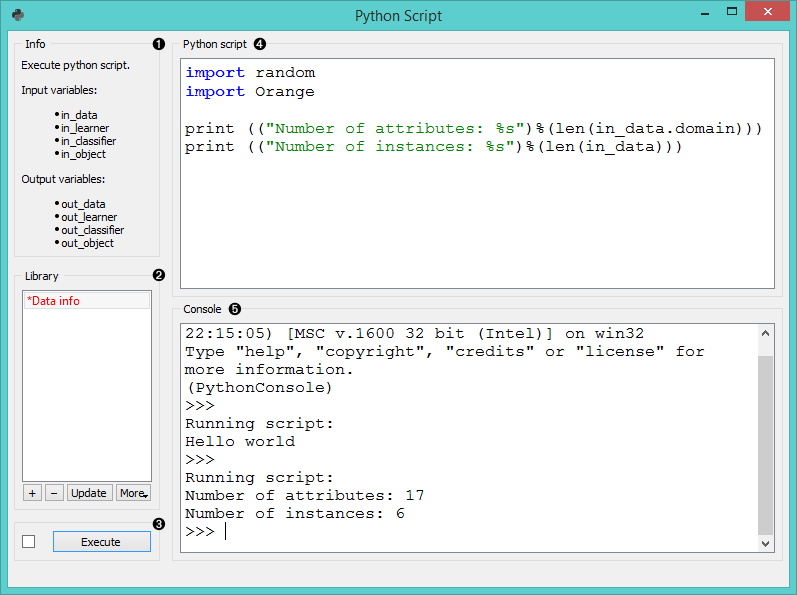
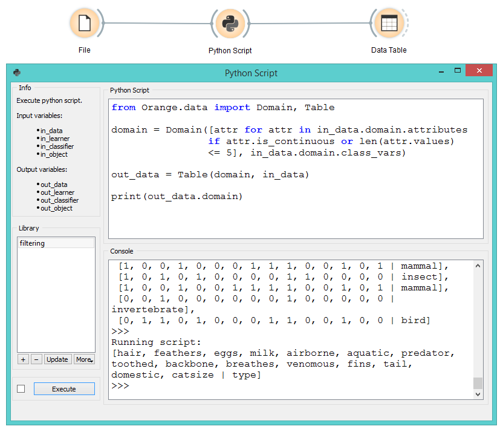
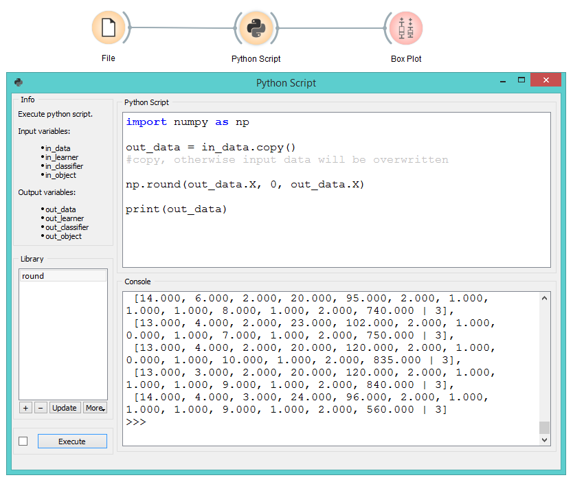
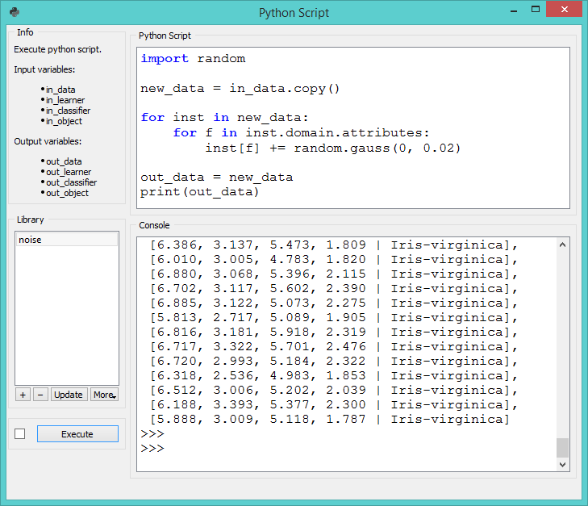
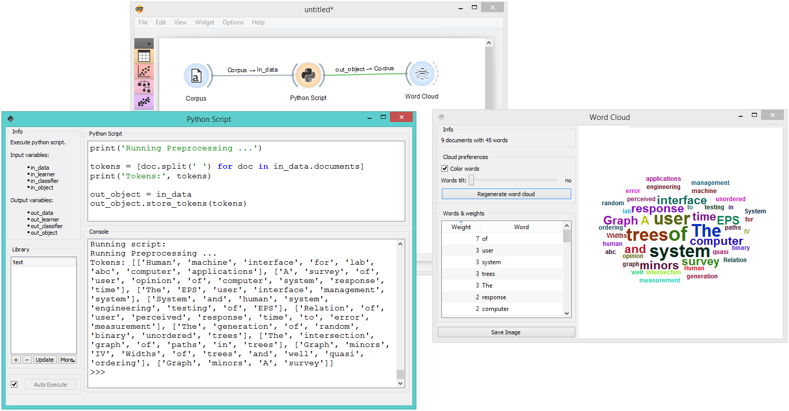

Python Script
Extends functionalities through Python scripting.
Inputs
- Data (Orange.data.Table): input dataset bound to
in_datavariable - Learner (Orange.classification.Learner): input learner bound to
in_learnervariable - Classifier (Orange.classification.Learner): input classifier bound to
in_classifiervariable - Object: input Python object bound to
in_objectvariable
Outputs
- Data (Orange.data.Table): dataset retrieved from
out_datavariable - Learner (Orange.classification.Learner): learner retrieved from
out_learnervariable - Classifier (Orange.classification.Learner): classifier retrieved from
out_classifiervariable - Object: Python object retrieved from
out_objectvariable
Python Script widget can be used to run a python script in the input, when a suitable functionality is not implemented in an existing widget. The script has in_data, in_distance, in_learner, in_classifier and in_object variables (from input signals) in its local namespace. If a signal is not connected or it did not yet receive any data, those variables contain None.
After the script is executed variables from the script’s local namespace are extracted and used as outputs of the widget. The widget can be further connected to other widgets for visualizing the output.
For instance the following script would simply pass on all signals it receives:
out_data = in_data
out_distance = in_distance
out_learner = in_learner
out_classifier = in_classifier
out_object = in_object
Note: You should not modify the input objects in place.

- Info box contains names of basic operators for Orange Python script.
- The Library control can be used to manage multiple scripts. Pressing “+” will add a new entry and open it in the Python script editor. When the script is modified, its entry in the Library will change to indicate it has unsaved changes. Pressing Update will save the script (keyboard shortcut “Ctrl+S”). A script can be removed by selecting it and pressing the “-” button.
- Pressing Execute in the Run box executes the script (keyboard shortcut “Ctrl+R”). Any script output (from
print) is captured and displayed in the Console below the script. - The Python script editor on the left can be used to edit a script (it supports some rudimentary syntax highlighting).
- Console displays the output of the script.
Examples
Python Script widget is intended to extend functionalities for advanced users. Classes from Orange library are described in the documentation. To find further information about orange Table class see Table, Domain, and Variable documentation.
One can, for example, do batch filtering by attributes. We used zoo.tab for the example and we filtered out all the attributes that have more than 5 discrete values. This in our case removed only ‘leg’ attribute, but imagine an example where one would have many such attributes.
from Orange.data import Domain, Table
domain = Domain([attr for attr in in_data.domain.attributes
if attr.is_continuous or len(attr.values) <= 5],
in_data.domain.class_vars)
out_data = Table(domain, in_data)

The second example shows how to round all the values in a few lines of code. This time we used wine.tab and rounded all the values to whole numbers.
import numpy as np
out_data = in_data.copy()
#copy, otherwise input data will be overwritten
np.round(out_data.X, 0, out_data.X)

The third example introduces some Gaussian noise to the data. Again we make a copy of the input data, then walk through all the values with a double for loop and add random noise.
import random
from Orange.data import Domain, Table
new_data = in_data.copy()
for inst in new_data:
for f in inst.domain.attributes:
inst[f] += random.gauss(0, 0.02)
out_data = new_data

The final example uses Orange3-Text add-on. Python Script is very useful for custom preprocessing in text mining, extracting new features from strings, or utilizing advanced nltk or gensim functions. Below, we simply tokenized our input data from deerwester.tab by splitting them by whitespace.
print('Running Preprocessing ...')
tokens = [doc.split(' ') for doc in in_data.documents]
print('Tokens:', tokens)
out_object = in_data
out_object.store_tokens(tokens)
You can add a lot of other preprocessing steps to further adjust the output. The output of Python Script can be used with any widget that accepts the type of output your script produces. In this case, connection is green, which signalizes the right type of input for Word Cloud widget.
